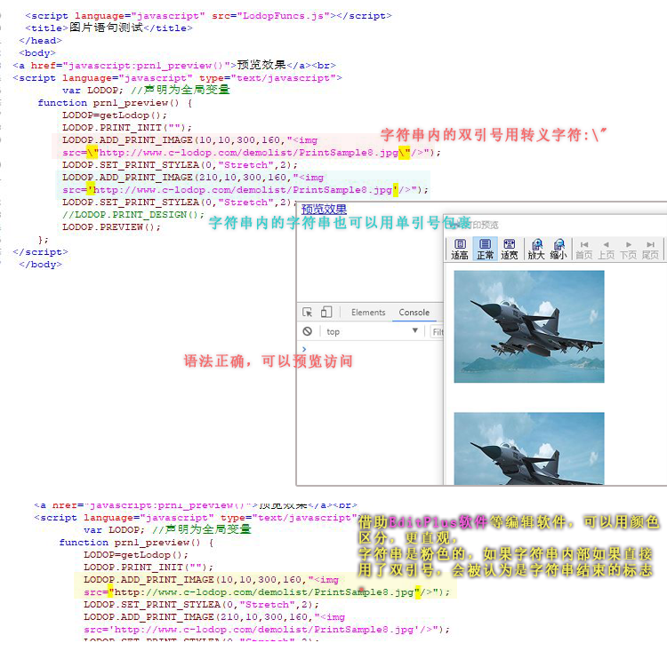

JS字符串里字符串嵌套和转义字符
之前的博文里：【JS新手教程】JS字符串里的转义字符，是介绍如果字符串里有需要输出的双引号时可以用转义字符。
如果实际字符串里有包含的字符串嵌套，内部嵌套的也可以用单引号包裹。
(因JS中，字符串就是英文半角符的双引号包裹的，如果实际字符串内部有双引号，如果直接用双引号，会被认为是字符串结束的标志。可用转义字符，或单引号方式）
如果字符串中有双引号或嵌套的字符串结构用的双引号，不用转义字符或内嵌内部的改用单引号，会报语法错误，至于具体的JS报错，这里就不测试了。有一些编写程序的简单软件可以帮助自己在写的时候就查看到一些语法的正确，如EditPlus软件，这个里面写html或JS等挺方便，字符串和各种代码用不同的颜色标注，万一不小心少些双引号，字符串没闭合，也能看出颜色一眼看出来。
----简短问答----：
1.打印图片JS报语法错误
发一下图片打印项语句，这边测试下
img标签里的路径用单引号括起来，或img标签里的src的双引号用转义字符转义下。
例如：LODOP.ADD_PRINT_IMAGE(10,10,300,160,"<img src=\"http://www.c-lodop.com/demolist/PrintSample8.jpg\"/>");
或LODOP.ADD_PRINT_IMAGE(10,10,300,160,"<img src='http://www.c-lodop.com/demolist/PrintSample8.jpg'/>");
2.打印图片JS报语法错误，打印设计图片就是双引号，为什么用单引号
这属于JS语法问题，参考样例35，关闭设计后返回打印设计的代码，返回的是带转义字符的img标签的代码。
----简短问答结束-----
测试代码：
<script language="javascript" src="LodopFuncs.js"></script> <title>图片语句测试</title> </head> <body> <a href="javascript:prn1_preview()">预览效果</a><br> <script language="javascript" type="text/javascript"> var LODOP; //声明为全局变量 function prn1_preview() { LODOP=getLodop(); LODOP.PRINT_INIT(""); LODOP.ADD_PRINT_IMAGE(10,10,300,160,"<img src=\"http://www.c-lodop.com/demolist/PrintSample8.jpg\"/>"); LODOP.SET_PRINT_STYLEA(0,"Stretch",2); LODOP.ADD_PRINT_IMAGE(210,10,300,160,"<img src='http://www.c-lodop.com/demolist/PrintSample8.jpg'/>"); LODOP.SET_PRINT_STYLEA(0,"Stretch",2); //LODOP.PRINT_DESIGN(); LODOP.PREVIEW(); }; </script>
图示：
